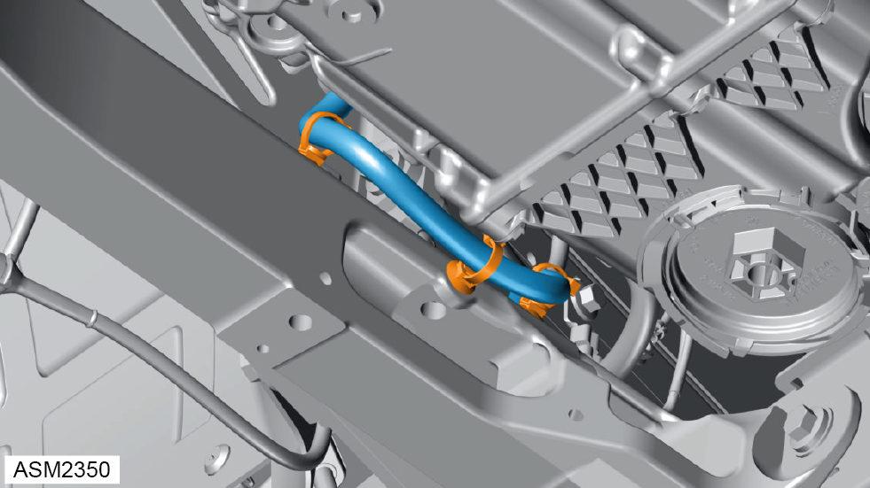
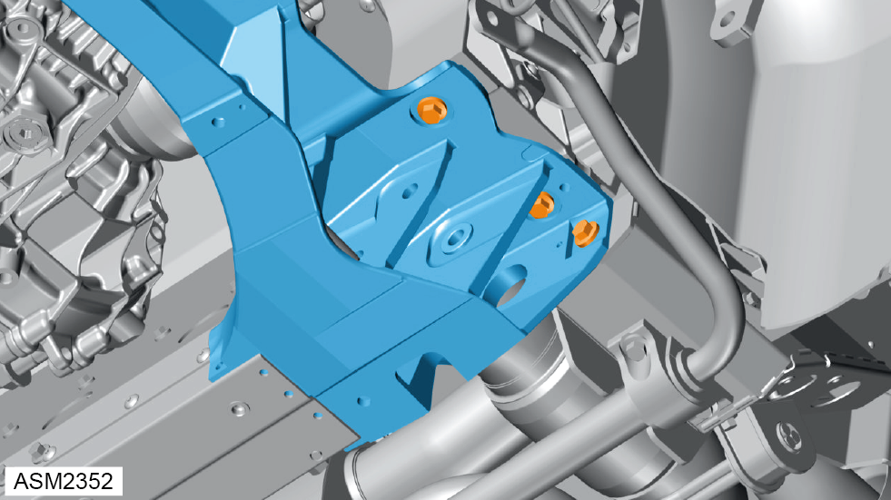
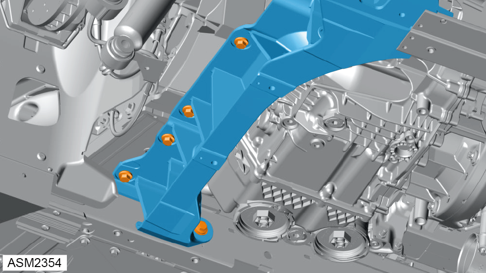
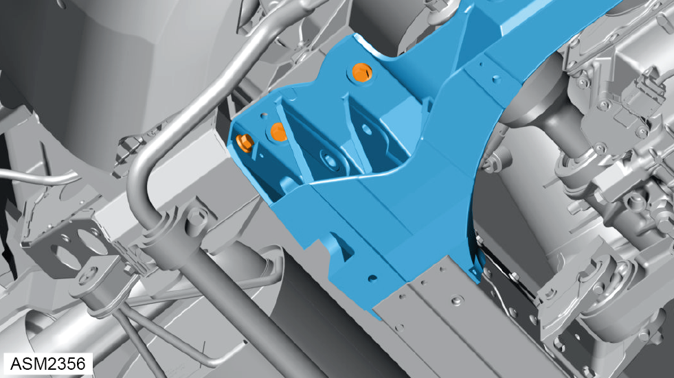
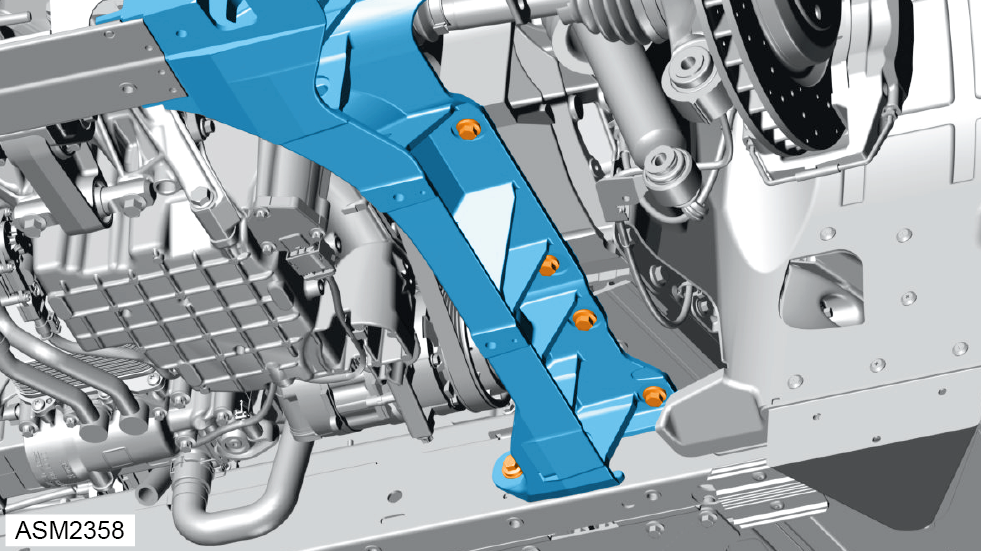
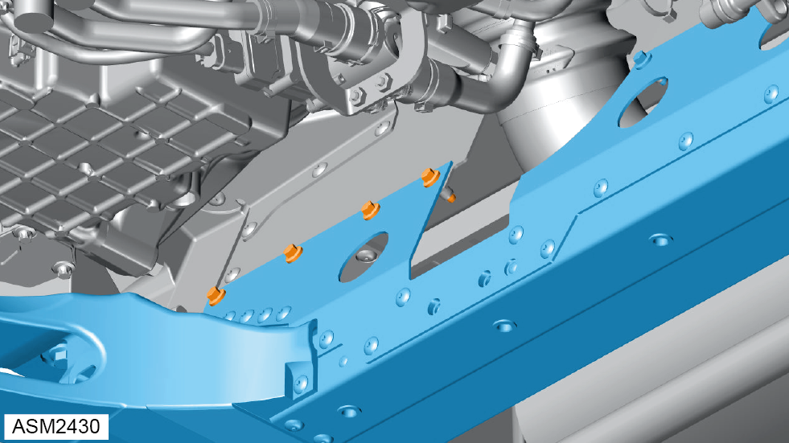
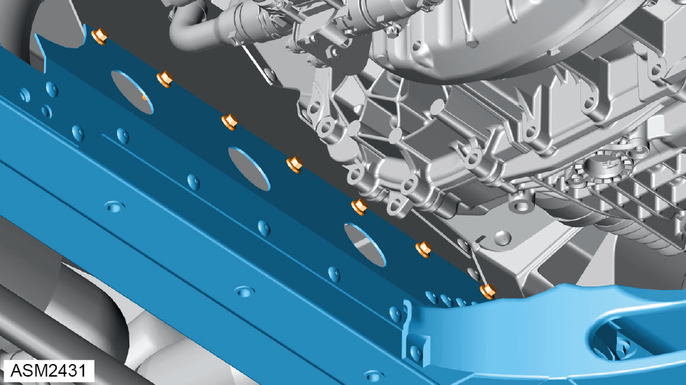
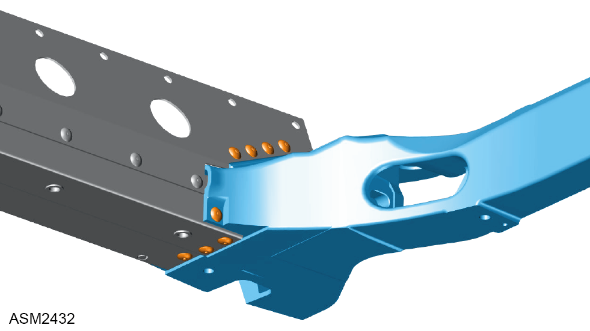
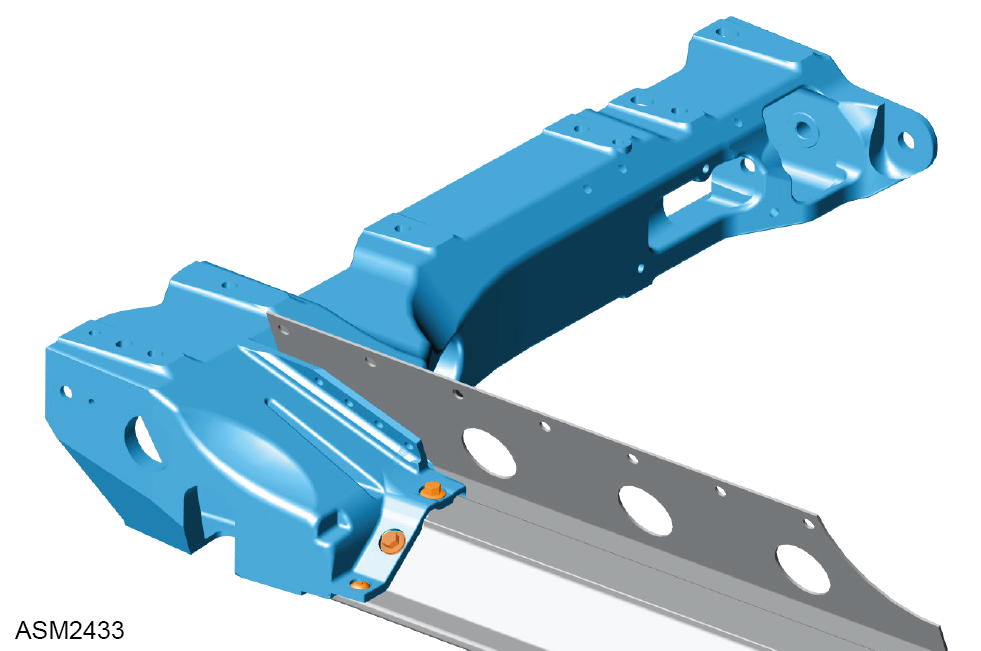

Crossmember - Rear Subframe - Lower - Left Side - 4 Cylinder
Print
Operation Code: 30.01.06-02
Removal
- Remove lower wishbone - rear left side. Refer to procedure.
- Remove lower wishbone - rear right side.
NOTE: Procedure is the same as left side component.
- Remove toe arm assemblies - left and right side. Refer to procedure.
- Remove rear diffuser. Refer to procedure.
- Remove engine mount - rear right side lower. Refer to procedure.
- Install suitable lifting table under vehicle.
- Lower vehicle until vehicle is supported on lifting table.

- Release clips (x3) securing ground harness to lower subframe.

- Remove M5x30 bolts (x3) securing lower rear subframe to rear subframe. Torque 45 Nm.

- Remove M5x30 bolts (x5) securing lower rear subframe to underbody assembly. Torque 45 Nm.

- Remove M5x30 bolts (x3) securing lower rear subframe to rear subframe. Torque 45 Nm.

- Remove M5x30 bolts (x5) securing lower rear subframe to underbody assembly. Torque 45 Nm.

- Remove bolts (x4) securing lower rear subframe to rear subframe.

- Remove bolts (x6) securing lower rear subframe to rear subframe.
- Remove lower rear subframe.

- Drill out rivets (x8) securing lower crossmember to lower rear subframe.

- Drill out rivet securing lower crossmember to lower rear subframe.
- Remove M8x20 bolts (x2) securing lower crossmember to lower rear subframe.
- Remove lower crossmember.
Installation
- Installation is the reverse of removal procedure except for the following:
- Perform a rear suspension geometry inspection and adjustment. Refer to procedure.